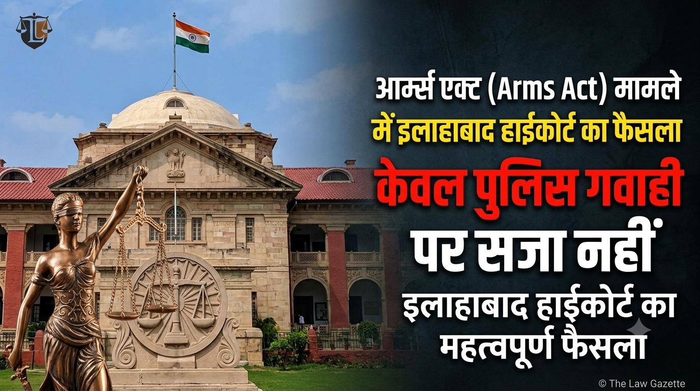
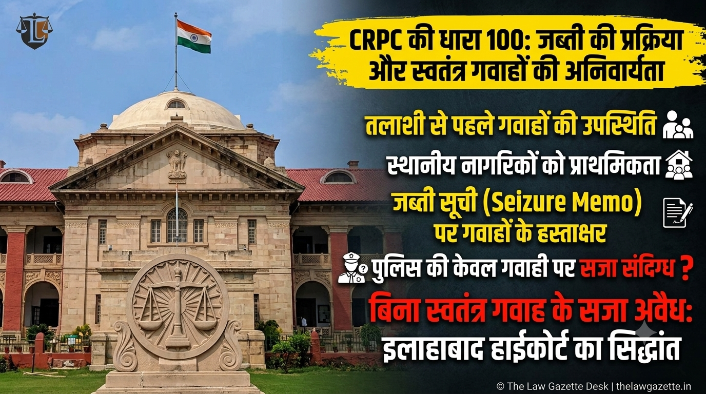

आर्म्स एक्ट (Section 25/27 Arms Act) मामले में इलाहाबाद हाईकोर्ट का फैसला: बिना स्वतंत्र गवाह और रिकवरी की प्रमाणिकता के केवल पुलिस गवाही पर सजा अवैध

प्रयागराज: इलाहाबाद हाईकोर्ट ने अवैध हथियार बरामदगी से जुड़े आर्म्स एक्ट के एक मामले में महत्वपूर्ण फैसला सुनाते हुए अपीलकर्ता की सजा और जुर्माने को रद्द कर दिया है। उच्च न्यायालय ने स्पष्ट किया कि सार्वजनिक स्थान से कथित बरामदगी के बावजूद पुलिस द्वारा किसी भी स्वतंत्र पंच/गवाह (Independent Witness) को शामिल न करना और जब्ती सूची (Seizure Memo) में गंभीर त्रुटियां होना अभियोजन पक्ष के मामले को संदिग्ध बनाता है।
केस का विस्तृत विवरण (Case Details):
- केस का नाम: शकीम बनाम स्टेट ऑफ यू.पी. (Shakeem vs. State of U.P.)
- अदालत: इलाहाबाद उच्च न्यायालय (प्रयागराज)
- पीठ (Bench): माननीय न्यायमूर्ति (Justice) समीत गोपाल
- संबद्ध धाराएं: आर्म्स एक्ट, 1959 की धारा 25 (1-B)(a) और धारा 27
क्या था पूरा मामला?
पुलिस टीम का दावा था कि गश्त के दौरान मुखबिर की सूचना पर आरोपी को एक सार्वजनिक सड़क के पास से गिरफ्तार किया गया और उसकी तलाशी लेने पर 315 बोर का एक अवैध तमंचा और दो जिंदा कारतूस बरामद हुए। पुलिस कर्मियों की ही गवाही के आधार पर निचली अदालत (Session Court) ने आरोपी को धारा 25 आर्म्स एक्ट के तहत दोषी मानते हुए 2 साल के कारावास की सजा सुनाई थी। आरोपी ने इस सजा के खिलाफ हाईकोर्ट में याचिका दायर की।

चित्र: सीआरपीसी की धारा 100 के तहत जब्ती की प्रक्रिया और स्वतंत्र गवाहों की अनिवार्यता
माननीय हाईकोर्ट की मुख्य टिप्पणियां व विश्लेषण:
- स्वतंत्र गवाहों का अभाव (Absence of Independent Witnesses): हाईकोर्ट ने उल्लेख किया कि कथित गिरफ्तारी और बरामदगी दिन के समय व्यस्त सार्वजनिक स्थान पर हुई थी, लेकिन पुलिस ने किसी भी स्थानीय नागरिक को गवाह नहीं बनाया और न ही ऐसा न कर पाने का कोई वाजिब कारण दर्ज किया।
- सीआरपीसी धारा 100(4) का उल्लंघन: अदालत ने कहा कि कानून के अनुसार जब्ती की कार्रवाई के दौरान उस इलाके के दो स्वतंत्र और सम्मानित निवासियों का होना आवश्यक है। बिना किसी कारण के इस नियम की अनदेखी करना पुलिस कार्रवाई पर सवाल खड़े करता है।
- मालखाने और सैंपलिंग में खामियां: बरामद हथियार को सील करने और मालखाने में सुरक्षित जमा करने के संबंध में कोई ठोस रजिस्टर एंट्री पेश नहीं की गई, जिससे यह साबित नहीं हो पाया कि अदालत में पेश माल ही आरोपी से मिला था।
अदालत का अंतिम निर्णय:
माननीय उच्च न्यायालय ने माना कि केवल पुलिस अधिकारियों के बयानों के आधार पर, जो कि प्रक्रियात्मक त्रुटियों से भरे हैं, अभियुक्त को दोषी ठहराना सुरक्षित नहीं है। अदालत ने अपील स्वीकार करते हुए निचली अदालत के आदेश को निरस्त कर दिया और आरोपी को सभी आरोपों से बरी (Acquitted) कर दिया।